Unreal Engine Project: Sichuan Opera Actor Simulation
In this page, I will introduce my second Unreal project to you. It is a real-time interaction project, aiming at protecting the intangible cultural heritage of Sichuan Opera, as an interview in Renmin University and Virtual Simulation Laboratory. With the software we made with Unreal Engine and the motion capture device from Noitom, people can “try on” Sichuan opera costumes in a virtual environment, experiencing the face changing and fire puffing stunts firsthand. Besides the real-time interaction, we can also recorded the artist’s movements using motion capture, then displayed them in the project.
A demo with face changing skill in Sichuan opera
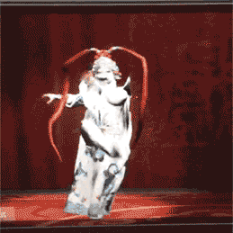
Since my experience and ability of using Unreal Engine and other modeling soft wares such as 3dMax, I was the leader and main developer of this project. I worked as a Technical Artist. My work including:
Here are some pictures of my work: 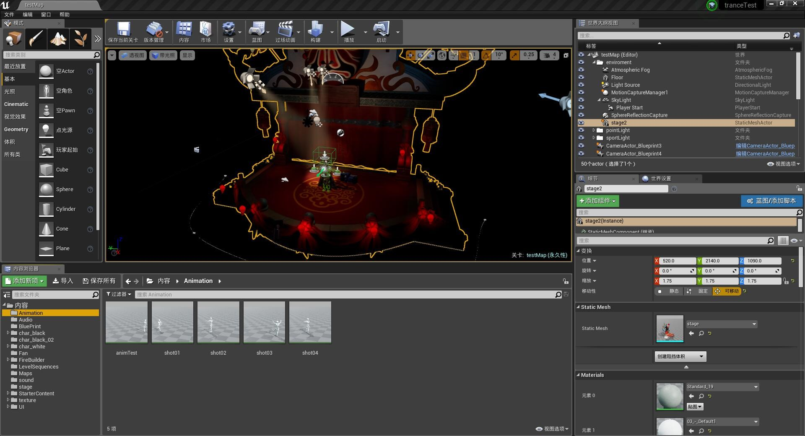 The project
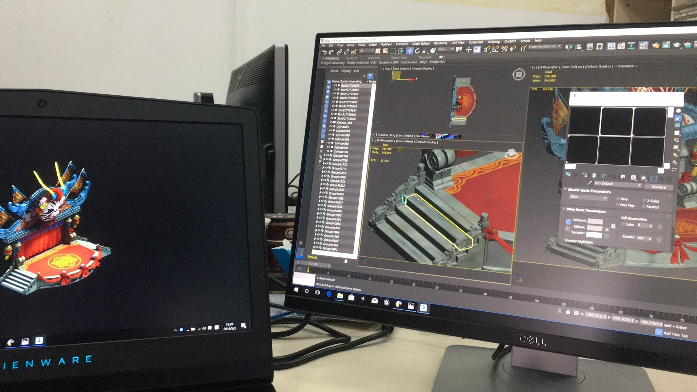 Modify the stage model (repair the broke texture)
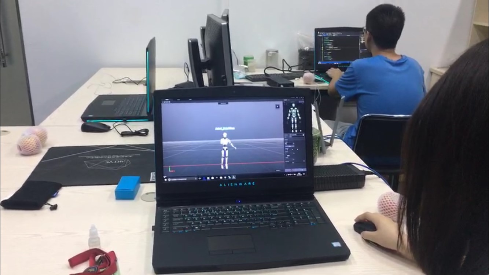 Connect the mocap device
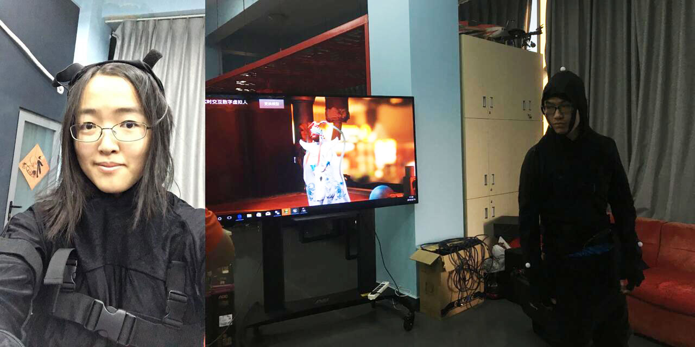 My selfie in the mocap suit and my workmate, controlling the virtual character by the suit
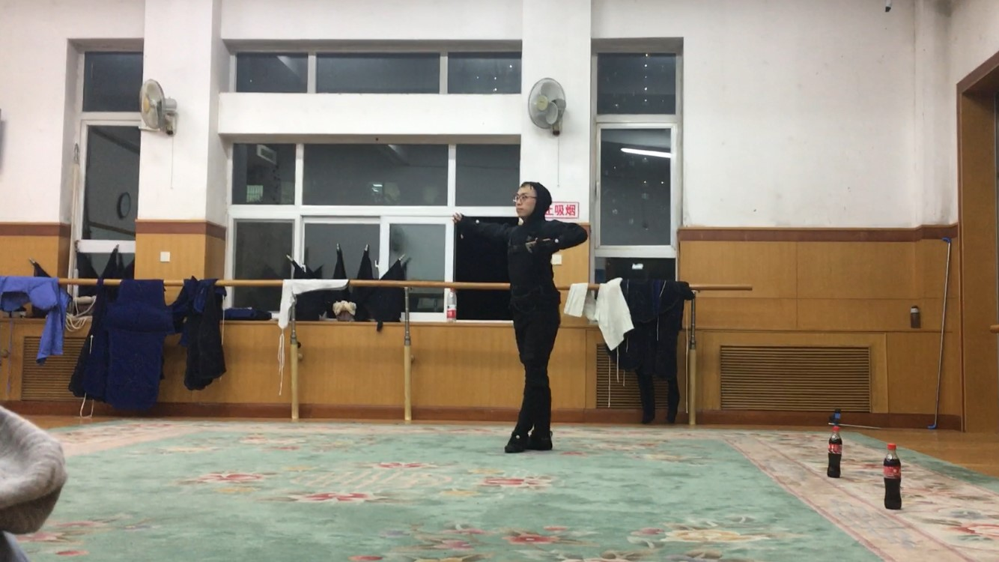 Capture the artist’s motion
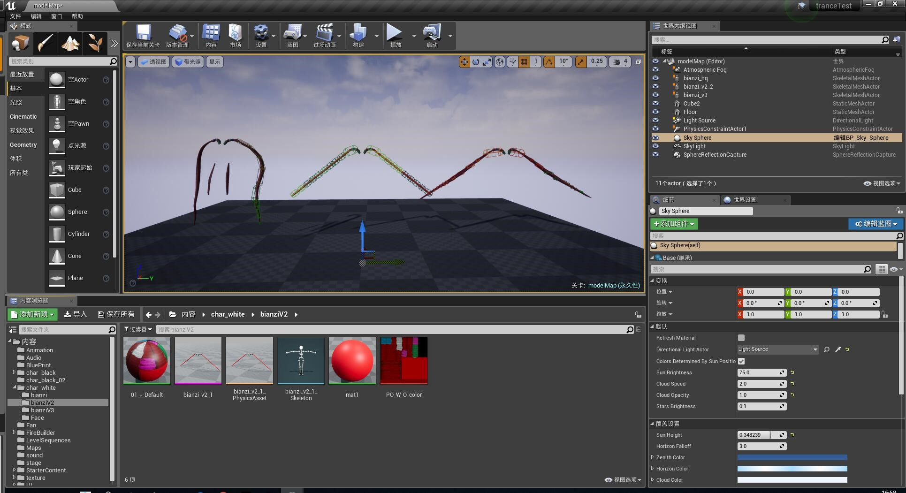 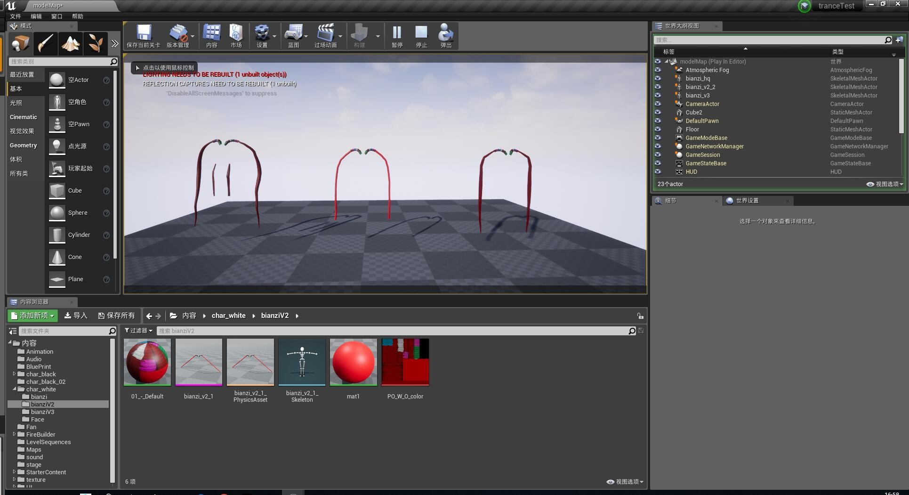 Three version of the ponytail decoration and their simulation result in Unreal
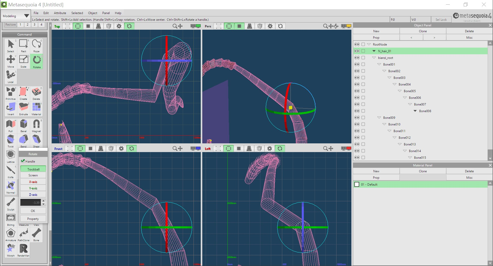 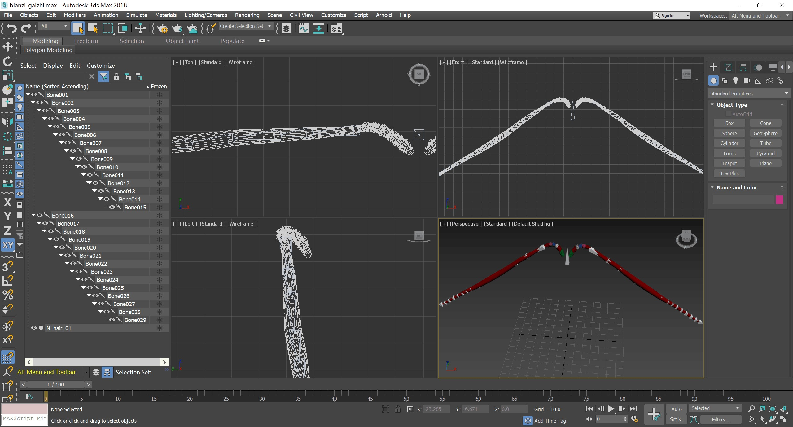 Use Metaseq4 and 3dMax to modify the ponytail decoration (If you want to calculate the physic by rigid body and constraint, you must make the mesh “stright”)
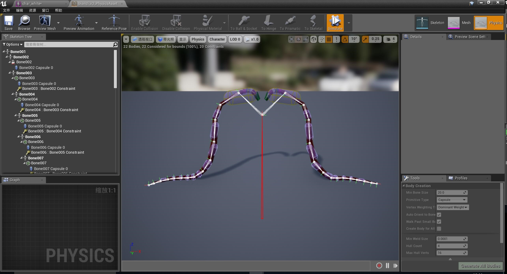 Simulation result in Unreal
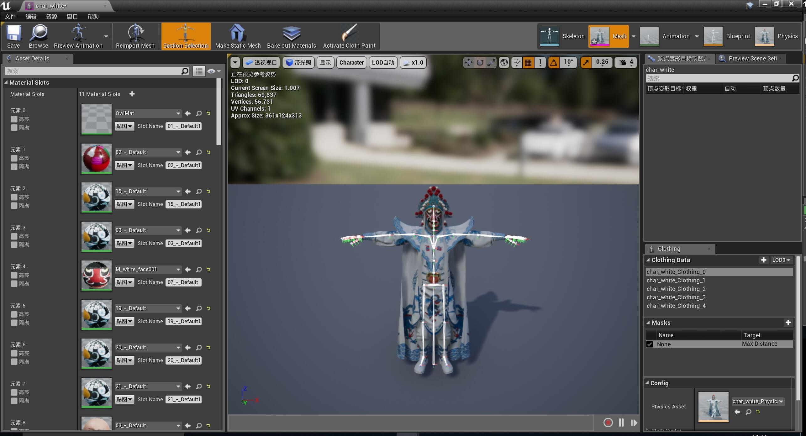 One of the characters we used (Not modeled by me, but I made the cloth in Unreal Engine)
Our work not only successfully promoted Sichuan Opera, but also laid a firm foundation for the Lab’s subsequent work.